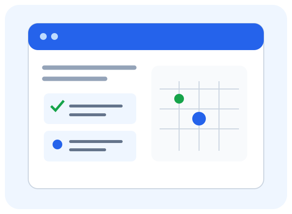

Завдання за предметами
Назва, дедлайн, пріоритет і статус допомагають розподілити навантаження.
Планувальник для студентів
Організуй лабораторні, підготовку до контрольних і самостійне навчання. StudyFlow допомагає бачити наступний крок.
Без встановлення · Українською · Для щоденного навчання

Назва, дедлайн, пріоритет і статус допомагають розподілити навантаження.
Перевіряй дати здачі та плануй роботу заздалегідь.
Відмічай завершені роботи й спостерігай за результатом.
П’ять сторінок із навігацією, завданнями, календарем і контактною формою.
Дані завдань і тема зберігаються в localStorage. Можна фільтрувати роботи та змінювати розмір тексту клавішами ArrowUp і ArrowDown поза полями вводу.